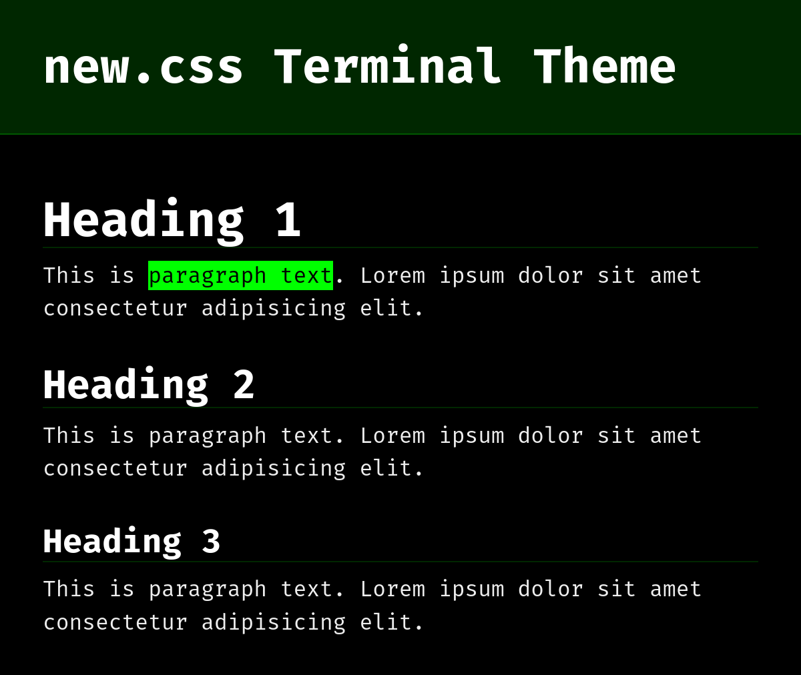

This site is made from vanilla HTML and the default new.css theme. View Source
A classless CSS framework to write modern websites using only HTML. It weighs~4.5kb.
View a demo here, or the quick-start guide here.
Vercel's impossibly fast CDN delivers new.css and the font Inter using xz/fonts, so there's virtually no bloat added to your pages.
And of course, there's a dark mode. It automatically applies a light/dark theme based on your browser's preference.
It supports custom color themes and fonts using CSS variables. For example, check out the terminal theme: newcss.net/theme/terminal/
new.css is a project from xz.
Here's your configuration:
<link rel="stylesheet" href="https://newcss.net/new.min.css"> to your <head>.💡 Use the code
<link rel="stylesheet" href="https://newcss.net/lite.css">for the lite version, which uses the system font stack rather than importing one.
Here are the improvements new.css adds to your browser's basic HTML.
body
abbr
blockquote
button
code
details
h1–h6
h1-h3
header
<body>!hr
kbd
mark
nav
samp
codetable
new.css uses an 10-color palette and can be easily customized. These are declared as CSS variables in the :root attribute.
💡 Both
new.min.cssandlite.csshave support for custom themes.litedoesn't import the font Inter by default, so it is recommended if you are using a custom font.
By loading a secondary style sheet after new.css in your HTML, you can override these variables. Here's the default theme:
@import url('https://fonts.xz.style/serve/inter.css');
:root {
--nc-font-sans: 'Inter', -apple-system, BlinkMacSystemFont,
'Segoe UI', Roboto, Oxygen, Ubuntu, Cantarell, 'Open
Sans', 'Helvetica Neue', sans-serif, "Apple Color
Emoji", "Segoe UI Emoji", "Segoe UI Symbol";
--nc-font-mono: 'Courier New', Courier, 'Ubuntu Mono',
'Liberation Mono', monospace;
--nc-tx-1: #000000;
--nc-tx-2: #1A1A1A;
--nc-bg-1: #FFFFFF;
--nc-bg-2: #F6F8FA;
--nc-bg-3: #E5E7EB;
--nc-lk-1: #0070F3;
--nc-lk-2: #0366D6;
--nc-lk-tx: #FFFFFF;
--nc-ac-1: #79FFE1;
--nc-ac-tx: #0C4047;
}
--nc-font-sans: Font for all text besides code or
preformatted--nc-font-mono: Font for <code>, <pre>,
<kbd>, <samp>--nc-tx-1: Heading text color--nc-tx-2: Body text color--nc-bg-1: Base background color--nc-bg-2: Slightly darker background color--nc-bg-3: Even slightly darker background color--nc-lk-1: Action color for links and buttons--nc-lk-2: Link and buttons on mouse hover and active--nc-ac-1: Accent color for <mark> and
text selection background:root. An example theme file is available here: boilerplate.css@import tag before the :root element. Many open-source fonts are available on xz/fonts.<head>. Here's an example <head>:
<head>
<meta charset="UTF-8">
<meta name="viewport" content="width=device-width, initial-scale=1.0">
<title>Document</title>
<link rel="stylesheet" href="https://newcss.net/lite.css">
<link rel="stylesheet" href="https://example.com/MY-CUSTOM-THEME.css">
</head>
Here are two extra themes with CDN links. Feel free to use or edit them!
Night theme is enabled by default if your browser is set to prefer dark themes. Using the theme link below makes it use night theme regardless.
<link rel="stylesheet" href="https://newcss.net/theme/night.css">
Preview at newcss.net/theme/night/
<link rel="stylesheet" href="https://newcss.net/theme/terminal.css">
Preview at newcss.net/theme/terminal/

We collect totally anonymous basic analytics using Simple Analytics. View live analytics at simpleanalytics.com/newcss.net.